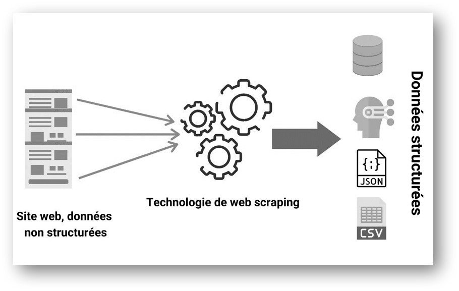
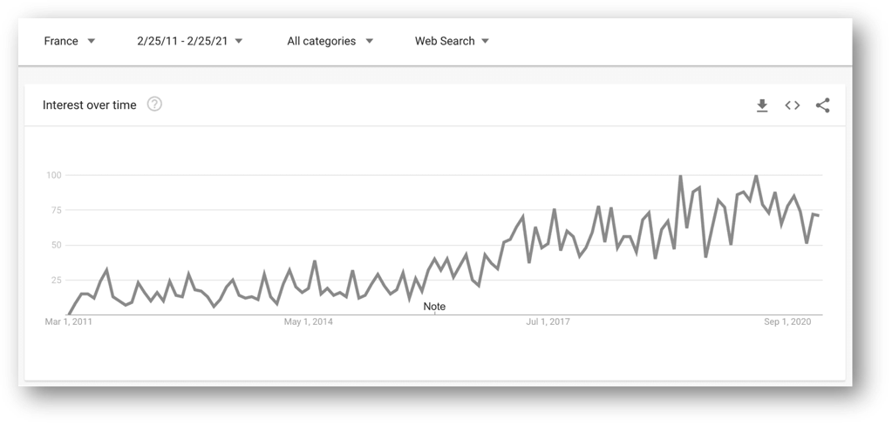
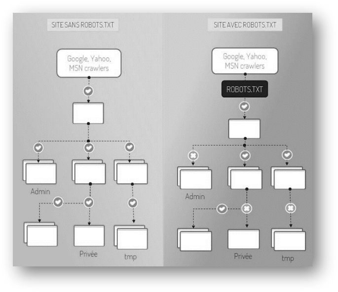

Chapitre 1 Généralités sur le web scraping
1.1 Définitions
1.1.1 Data Scraping
Le data scraping (capture, collecte ou extraction de données en français) est une technique par laquelle un programme informatique extrait des informations depuis une source lisible par un humain et produite par un autre programme informatique. Il permet d’extraire des données et les structurer depuis une source où l’information n’est ni structurée (pour un programme), ni documentée (pour un ordinateur), et non optimisée pour être extraite facilement (pour un humain).
Il existe plusieurs types de data scraping parmi lesquels le screen scraping (extraction des données depuis un écran), le report mining (extraction des données depuis un rapport en fichier texte) et le plus répandu, le web scraping.
1.1.2 Le web scraping
Le web scraping est une méthode automatique qui permet d’extraire de grandes quantités de données à partir de sites web , via le protocole HTTP (le protocole de communication du web). La plupart de ces données sont des données non structurées au format HTML qui sont ensuite converties en données structurées dans un tableur ou une base de données afin de pouvoir être utilisées dans diverses applications.

Cette image ci-dessus illustre clairement la définition du web scraping. Un web scraper, prend en entrée des sites web et retourne des données bien structurées.
Il existe nombreuses manières d’effectuer du web scraping pour obtenir des données à partir des sites web : l’utilisation des services en ligne, des APIs (interface de programmation d’application) particulières ou même la création de votre code de web scraping à partir de zéro. Dans ce cas, vous devez écrire un script qui automatisera tout le processus, avec R, par exemple.
1.2 Justification
Maintenant que vous avez une idée de ce qu’est-ce le web scraping, dans cette section, nous allons étudier son importance et ses domaines d’application.
Pourquoi web scraper ?, — A travers ce graphique, Stephen nous montre l’intérêt croissant pour le web scraping sur ces dernières années.
Généralement, la collecte de données sur le web est utilisée par les personnes et les entreprises qui veulent utiliser la vaste quantité de données disponibles sur le web pour prendre des décisions plus intelligentes. —
Stephen MESNILDREY
CEO & Fondateur de sales-hacking.co
1.2.1 Collecter des données rapidement et automatiquement
Imaginez que vous vouliez déterminer le prix moyen des romans vendus sur le site de la Fnac. Vous devez pour cela récupérer le prix de chaque livre à la vente. Vous pouvez essayer de les recopier à la main dans un fichier Excel, ou bien les copier-coller si vous voulez gagner un peu de temps. Mais vous sentez-vous prêt à parcourir les centaines de pages du site de la Fnac ?
Si la réponse est non, alors le web scraping est la solution qu’il vous faut. Le web-scraping vous permettra de collecter ces données :
- automatiquement
- rapidement
- en grande quantité.
1.2.2 A quoi sert le web scraping au sein d’une entreprise ?
Le web scraping est une technique qui a de multiples applications business. Il est utile dans la plupart des secteurs d’activités, sinon tous. En récupérant des informations, l’entreprise comprend mieux son environnement : le comportement de ses concurrents, de ses clients, les évolutions de marché, etc.
1.2.3 La surveillance des prix
Le web scraping peut être utilisé par les entreprises pour récupérer les données des produits concurrents et ensuite de les utiliser pour fixer le prix optimal de leurs produits afin d’obtenir un revenu maximal.
Un exemple : Courir.com, le retailer de chaussures, peut surveiller les prix pratiqués par son concurrent direct Foot Locker en examinant les prix fixés pour les mêmes modèles sur son site web.
1.2.4 Étude de marché
Les entreprises peuvent utiliser le web scraping pour leurs études de marché. Les données de haute qualité obtenues en grands volumes peuvent être très utiles aux entreprises pour analyser les tendances de consommation et comprendre dans quelle direction l’entreprise doit se diriger à l’avenir.
Exemple : un fabricant peut analyser le nombre de commentaires des acheteurs sur une marketplace (comme Amazon) à propos des produits similaires aux siens. En analysant leurs avis, il peut ensuite adapter son offre à la popularité de certains produits.
1.2.5 Apprentissage automatique
Les modèles d’apprentissage automatique ont besoin de données brutes pour évoluer et s’améliorer en précision. L’apprentissage automatique alimente les merveilles technologiques d’aujourd’hui, comme les voitures sans conducteur, les vols spatiaux, la reconnaissance d’images et de la parole. Cependant, ces modèles ont besoin d’énormément de données variées pour améliorer leur précision et leur fiabilité. C’est là le principal intérêt du web scraping. Ils peuvent permettre de collecter en un temps record une grande variété de données, de textes, d’images et des tables en un temps relativement court, pour alimenter automatiquement ces modèles.
1.2.6 Surveillance des actualités
Le web scraping des sites d’actualités peut fournir des rapports détaillés sur l’actualité à une entreprise. C’est d’autant plus essentiel pour les entreprises du secteur du journalisme ou qui dépendent de l’actualité quotidienne pour leur fonctionnement. Après tout, les rapports d’actualité peuvent faire ou défaire une entreprise en une seule journée.
1.2.7 Analyse des sentiments et relation client
Si les entreprises veulent comprendre le sentiment général des consommateurs à l’égard de leurs produits, l’analyse des sentiments est indispensable. Les entreprises peuvent utiliser le web scraping pour collecter des données à partir des réseaux sociaux tels que Facebook, Twitter et sur leur propre site, ou le site web des concurents afin de connaître le sentiment général sur leurs produits. Cela les aidera à créer des produits que les gens désirent et à prendre de l’avance sur leurs concurrents.
En effet, le web scraping peut être implémenté sur le site de l’entreprise, mais aussi sur les sites de ses retailers. On peut ainsi compiler les avis exprimés par les usagers à travers le monde.
Ces commentaires sont une source d’informations cruciales. Ils sont analysés avec R ou Python grâce au NLP (Natural Language Processing). Les informations obtenues permettent d’améliorer la relation clients en comprenant mieux leurs attentes.
1.2.8 Marketing par courriel et la prospection
Les entreprises peuvent également utiliser le web scraping pour le marketing par e-mail ou par le calling. Elles peuvent collecter les contacts (adresse e-mail ou numéro de téléphone) à partir de divers sites en utilisant le web scraping afin de constituer un fichier de prospection.
1.3 Légalité
1.3.1 AVERTISSEMENT
CE DOCUMENT NE CONSTITUE PAS UN CONSEIL JURIDIQUE PROFESSIONNEL CONCERNANT L’EXTRACTION AUTOMATISÉE DE DONNÉES DU WEB (C’EST-À-DIRE LE WEB SCRAPING). IL EST UNIQUEMENT À TITRE D’INFORMATION ET PRÉSENTE UN APERÇU DES ASPECTS JURIDIQUES ET ÉTHIQUES QUI POURRAIENT ÊTRE IMPORTANTS DANS LE CONTEXTE DES PRATIQUES DE SCRAPING WEB.
1.3.2 Aperçu
La véritable question est de savoir comment vous comptez utiliser les données que vous avez extraites d’un site web (manuellement ou à l’aide d’un logiciel).
En effet, les données affichées par la plupart des sites web sont destinées à la consommation publique. Il est tout à fait légal de copier ces informations.
Cependant, les processus de web scraping doivent respecter les conditions d’utilisation et les déclarations de copyright des sites web cibles.
De plus, les web scrapers peuvent lire et extraire des données de pages web plus rapidement que les humains, il convient de veiller à ce que le processus n’affecte en aucune manière les performances ou la bande passante du serveur web.
Mais sur un plan juridique les choses ne sont pas aussi simples.
Le site web wikipedia - web scraping - Légalité, mentionne des cas de procès et leurs issues aux États-Unis et en Europe.
1.3.4 Analyse d’un fichier robots.txt
Le protocole d’exclusion des robots, plus connu sous le nom de robots.txt, est une convention visant à empêcher les robots d’exploration (les web crawlers, qu’on abordera dans le dernier chapitre) d’accéder à tout ou une partie d’un site web. Et pour être dans la légalité de scraper, vous pouvez vous aussi analyser ce fichier. Le package R robotstxt, fournit en effet des fonctions, pour accéder à ce fichier (généralement situé dans la racine du site) et d’analyser les autorisations.
En savoir plus sur robots.txt
# => Librarie
library("robotstxt")
# => Acceder au fichier robots.txt
rt <- get_robotstxt(domain = "https://wikipedia.org/")
paths_allowed(paths = c("https://wikipedia.org/"))##
wikipedia.org## [1] TRUESi vous avez une réponse TRUE, cela veut dire que vous avez des autorisations d’extraction du contenu. A noter que, uniquement une partie du site web peut être autorisée, donc vous devriez vérifier presque tous les urls du sites web.
L’image ci-dessous, nous montre les autorisations d’accès aux contenus d’un site web protège avec un robots.txt contrairement à un site web qui n’en procède pas. En effet, un robot d’indexation de site web (comme celui de Google ou de Yahoo) ne pourrait pas accéder à certains répertoires empêchés par le robots.txt (l’image à droite). Dans le cadre d’une extraction du contenu de ce dernier, on ne doit pas scraper les pages (répertoires) dont l’accès n’est pas autorisé par le robots.txt.

1.4 Outils et méthodes
Il existe une multitude d’outils sous forme d’extensions, de Frameworks (infrastructure logicielle) ou de logiciels sur le marché pour scraper un site web.
1.4.1 Les Bases du web scraping
L’extraction des données web, fonctionne généralement en 2 parties. Une première partie (crawler) d’exploration et de collecte des liens des pages d’intérêts. Une deuxième partie (scraper) d’extraction des contenus sur les pages explorées. Mais en fonction des projets, la première partie n’est pas généralement utilisée.
Web crawler : il guide le web scraper à travers les adresses web. Un web crawler est un robot automatisé qui parcourt les sites web pour lister et stocker l’ensemble des URL entrantes ou sortantes de chaque page.
Web scraper : il collecte et extrait les données sur les URLs spécifiées par le web crawler. Un web scraper est un programme ou outil automatisé qui parcourt des listes définies de sites web pour en extraire le contenu à partir de la structure HTML des pages.
Il est donc important de connaître la structure et l’identification des éléments d’intérêts d’une page web.
1.4.2 Comment démarrer un projet de web scraping
Voici à quoi ressemble un processus général de web scraping:
- Identifier un site web dont vous souhaitez collecter des données
- Collecter les URL des pages que vous voulez extraire des données (en recupérant le fichier
sitemaps.xmlpar exemple).
- Collecter les URL des pages que vous voulez extraire des données (en recupérant le fichier
- Faire une requête sur ces URL pour obtenir le code HTML de la page.
- Utiliser des sélecteurs pour trouver les données dans le code HTML.
- Enregistrer les données dans un format structuré.
- Procéder à l’automatisation de votre collecte ou à la création d’un API vers une autre application.
Cela paraît simple, non ? — Oui, c’est simple ! Si vous avez uniquement un petit projet. Mais malheureusement, vous devez relever un certain nombre de défis si vous avez besoin de collecter des données à grande échelle.
Par exemple :
- actualiser le web scraper si la structure du site web change,
- gérer les proxies, c’est-à-dire bouclé sur des adresses IP pour rester anonyme envers les serveurs web, sinon au risque de se voir éjecter,
- exécuter du code javascript,
- remplir des formulaires à travers du codes R,
- ou encore contourner des cookies ou des détecteurs de bots.
- automatiser l’exécution sur le cloud ou d’autres serveurs
Ce sont tous des problèmes profondément techniques qui peuvent mobiliser de nombreuses ressources. C’est en partie la raison pour laquelle de nombreuses entreprises choisissent d’externaliser la réalisation de ce type de projet.
1.4.3 Quelles compétences pour développer son web scraper ?
Tout comme chacun peut construire un site web, chacun peut construire son propre web scraper.
Cependant, les techniques disponibles pour construire votre propre web scraper nécessitent des connaissances en programmation R, Python, PHP ou Javascript par exemple.
Des Frameworks notamment en R vous permettent de créer des solutions entièrement personnalisables et 100% gratuites. Il convient que ce type de solution inclut qu’une personne dans votre entreprise soit en mesure de les développer et de les maintenir.
1.5 Prérequis
Le code contenu dans les pages suivantes est accessible aux lecteurs ayant une connaissance de base en R, ou familiarisé à la boîte d’outils analytique (python, Julia, SAS, etc.). Les non-codeurs (chef de projet data, etc) peuvent également obtenir des informations utiles. Les connaissances sur les formats de données JSON et JavaScript sont essentiels. Des connaissances en développement web ou sur la structure d’un site web sont également des atouts.
1.3.3 Comment éviter les ennuis ?
Les règles sont simples :
robots.txt(le protocole d’exclusion des robots).